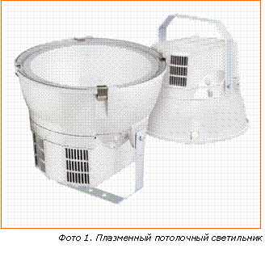
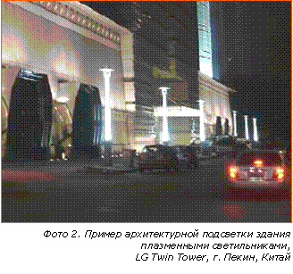

Плазменные светильники

В. Бубненков, менеджер направления «Освещение/Солнечные батареи» в странах СНГ, LG Electronics, Mосковский филиал, А. Фролов, журналист, журнал «Магазин свет», г. Москва
Первыми электрическими источниками света, получившими широкое распространение, были лампы накаливания. Позже принцип их работы был усовершенствован, в результате чего появились галогенные лампы накаливания (ГЛН).
Эволюция источников света привела к появлению газоразрядных ламп, принцип работы которых основан на электрическом разряде в парах металлов. В частности, разновидностью газоразрядных ламп являются люминесцентные. В них разряд происходит в парах ртути, в результате создается свечение в ультрафиолетовом диапазоне, которое преобразуется люминофором в видимый свет. Другой разновидностью газоразрядных ламп являются металлогалогенные (МГЛ). Для получения свечения в видимом спектре в горелку добавляются галогениды некоторых металлов.
Свет, излучаемый МГЛ, многими людьми признается «неестественным». Цвет предметов, освещенных такими лампами, может быть сильно искажен. Попробуйте, например, почитать журнал с множеством цветных фотографий под освещением МГЛ, а затем выйдите с ним на улицу под солнечный свет, и вы сразу заметите, что под МГЛ некоторые оттенки выглядят иначе. Причина заключается в том, что спектр МГЛ не является непрерывным, как у Солнца или ГЛН, а состоит из отдельных линий. Соотношение интенсивностей этих составляющих выбрано таким образом, что свет от МГЛ кажется нам белым, но при отражении света с подобным спектром от предметов возможны искажения цвета.
В результате электрического разряда в газе возникает плазма, так что все газоразрядные источники света можно отнести к плазменным. Решением проблемы является выбор серы в качестве вещества для получения плазмы и последующей эмиссии света. Так как сера в состоянии плазмы излучает свет в процессе молекулярной, а не атомной эмиссии, спектр излучения остается непрерывным во всем видимом диапазоне. При этом 73% общей эмиссии излучается в видимом диапазоне, около 20% в инфракрасном и менее 1% в ультрафиолетовом. Но использовать для серы традиционные электроды не представляется возможным, поскольку раскаленные пары серы мгновенно вступают в реакцию с металлом и разрушают электрод. Здесь требуются новые подходы, а, именно, возбуждение плазмы СВЧ-излучением.
Немного истории
Плазменные светильники на основе серы были изобретены в 1990 г. американскими учеными Майклом Ури (Michael Ury) и Чарльзом Вудом (Charles Wood). Разработка получила поддержку Департамента энергетики США, и уже в 1992 г. был продемонстрирован первый реально работающий образец плазменного светильника на основе серы.
Стремление компании постоянно находиться на острие технологий привело к созданию специализированного подразделения по разработке самых передовых устройств освещения. И одним из приоритетных направлений данного подразделения в настоящий момент являются именно плазменные светильники как наиболее перспективные и технологически совершенные устройства освещения. Серийное производство плазменных светильников было запущено в 2010 г., и в настоящее время компания является единственным в мире массовым производителем такой продукции.
Принцип работы
В основе работы плазменного светильника лежит принцип микроволновой ионизации газов. Микроволновое излучение, испускаемое магнетроном (впрочем, так как это уже не микроволновая печь, а светильник, в компании придумали новый термин - «лайтрон»), возбуждает пары серы в аргоне внутри колбы лампы. При достижении определенного значения рабочей температуры высокоионизированный газ переходит в состояние плазмы, которое начинает постоянно испускать свет.
ДЛЯ СПРАВКИ
Линии в спектре газоразрядного (плазменного) источника света связаны с резонансом в атомах или молекулах вещества, излучающего свет.
Высокое качество спектра, которое дает сера, обусловлено таким явлением как полиморфизм.
Сера может образовывать молекулы в виде цепочек произвольной длины, каждая из которых имеет собственную резонансную частоту. Большое количество молекул разных размеров в сумме дает непрерывный спектр.

Излучатель представляет собой запаянную стеклянную колбу диаметром 30 мм, в которой находятся аргон и несколько миллиграмм серы. При необходимости достижения определенного спектра внутрь колбы могут добавляться и другие вещества. Колба помещена в микроволновый резонатор, в который через волновод подается СВЧ-излучение от магнетрона. Резонатор представляет собой «корзину» из мелкоячеистой сетки. Свет через нее проходит, а СВЧ-излучение - нет. При разогреве аргона давление в колбе может достигать 5 атм. Важным моментом является необходимость охлаждения колбы, так как при слишком высоких температурах сера теряет полиморфные свойства, из-за чего спектр излучения может стать линейчатым.
Колба вращается для равномерного нагрева газа. Впрочем, есть вероятность, что в будущем эта проблема будет принципиально решена, например, путем использования микроволн с круговой поляризацией, которые будут сами заставлять плазму вращаться.
Все компоненты, необходимые для производства подобных ламп, уже давно освоены компанией в массовом производстве. Например, применяемый в устройстве магнетрон с рабочей частотой 2,45 ГГц производится по уже существующей технологии магнетрона для микроволновых печей, что делает и саму технологию, и производимую по ней продукцию в конечном итоге доступной и конкурентноспособной по цене.

Область применения плазменных светильников
В основном осветительные приборы данного типа предназначены для общественных, торговых и спортивных зданий и сооружений, конференц-залов, промышленных и складских помещений, теплиц. Главным образом, это помещения с высотой потолков от 6 м, для которых сложно реализовать освещение иными способами.
В отличие от светодиодных ламп, плазменные светильники могут создавать большой световой поток, и тем самым пригодны для освещения больших пространств - открытых территорий, стадионов, подсветки флагштоков и рекламно-информационных щитов, подсветки зданий и сооружений и так далее. Следует отметить, что для стадионов, конференц-залов и других публичных мест, откуда могут вестись телевизионные трансляции, плазменные светильники представляются наилучшим вариантом освещения, поскольку обладают сплошным световым спектром и отсутствием пульсаций, что благотворно влияет на качество телевизионной «картинки». Также они хорошо подойдут для выставочного бизнеса, где востребованы высокая мощность, большой срок работы и качество светового потока.
Сравнительные характеристики плазменных светильников
Если сравнивать плазменные светильники со светильниками на основе МГЛ, то, во-первых, налицо разница в светоотдаче. Светоотдача всего светильника на МГЛ оставляет примерно 60-80 лм/Вт. Плазменный светильник имеет светоотдачу 80-85 лм/Вт.
Свет плазменного светильника излучает в разы меньше ультрафиолета - на 92% меньше, чем галогенные лампы накаливания с колбой из кварцевого стекла и на 66% меньше, чем люминесцентные лампы, что благотворно влияет на здоровье людей, работающих под светом таких ламп.
Плазменные светильники оказались не в пример экологичнее, чем ртутные, металлогалогенные и люминесцентные. Например, содержание ртути в ртутной лампе - 200-250 мг, в металлогалогенной - 100-150 мг, в люминесцентной - 10-20 мг; в плазменном же светильнике ртути нет вообще, что ставит плазменные светильники на одну ступеньку по экологичности со светодиодными. Также плазменные светильники не содержат ни свинца, ни мышьяка.
Спектр излучения светильников данного типа по своему спектральному составу очень близок к естественному свету, излучаемому солнцем. Плазменные лампы характеризуются высоким индексом цветопередачи CRI - более 80 единиц. Если сравнить графики световых спектров, выдаваемые различными типами металлогалогенных ламп и плазменной лампой, то можно увидеть, что спектр первых является «линейчатым», а спектр последних сплошной и максимально приближен к спектру настоящего солнечного света.
Важное преимущество плазменного светильника - быстродействие. Например, чтобы после включения светильник стал светить на 80% от номинальной мощности, нужно всего 12 с. После выключения повторно можно включить светильник через 5 мин. Для сравнения МГЛ требует на разогрев около 4 мин., а ее повторное включение возможно не раньше, чем через 15 мин.
Также, со временем они практически не подвержены «выработке» - светоотдача плазменного светильника составляет 90% на всем протяжении периода его службы, в то время как у люминесцентных ламп он может снижаться ниже 40%. Плазменный светильник не имеет электродов (а это одно из самых слабых мест газоразрядных и люминесцентных ламп, поскольку более 60% отказов подобных ламп случаются по вине выхода из строя электродов), что позволило компании довести средний срок службы устройства до 50 тыс. ч. Это существенно превосходит аналогичный показатель для натриевых ламп высокого давления, который составляет 15-20 тыс. ч.
Помимо всего прочего, плазменная лампа оказалась прекрасным источником света для растений в силу особенностей своего спектра - по спектральной составляющей он наиболее близок к солнечному среди всех присутствующих на рынке, это благодатно сказывается на ходе процессов фотосинтеза, которые обычно идут только под солнечным светом. Некоторые ученые считают плазменные светильники наиболее перспективными источниками света для оранжерей.